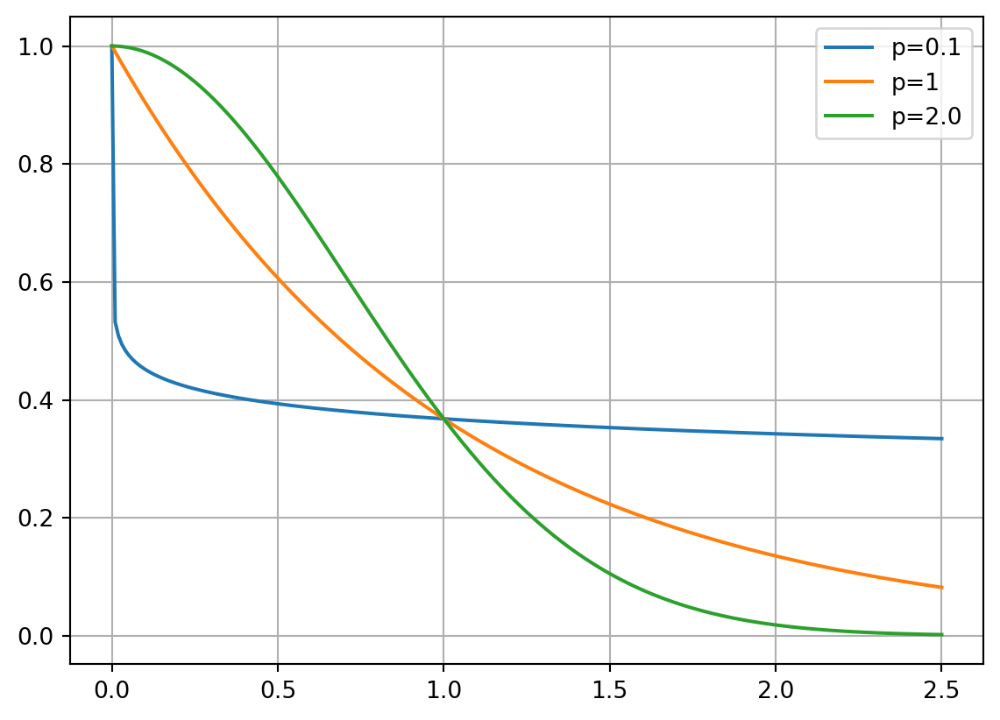
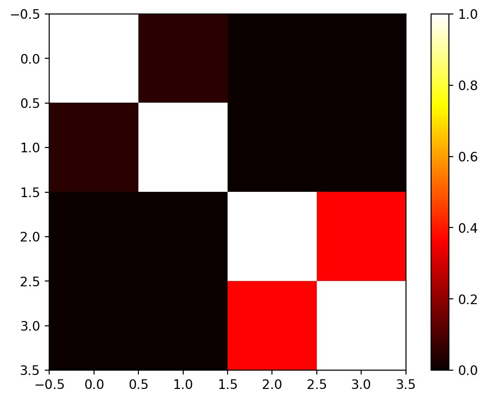
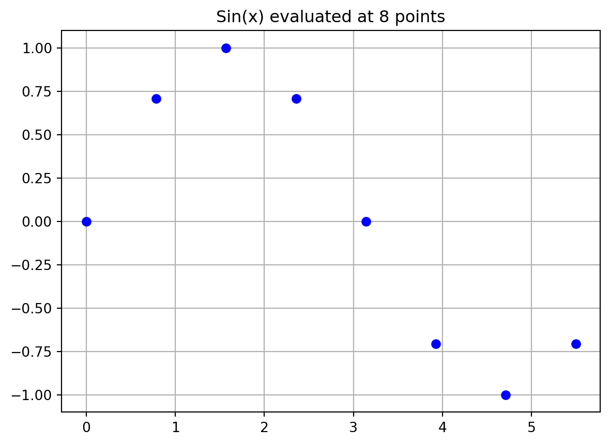
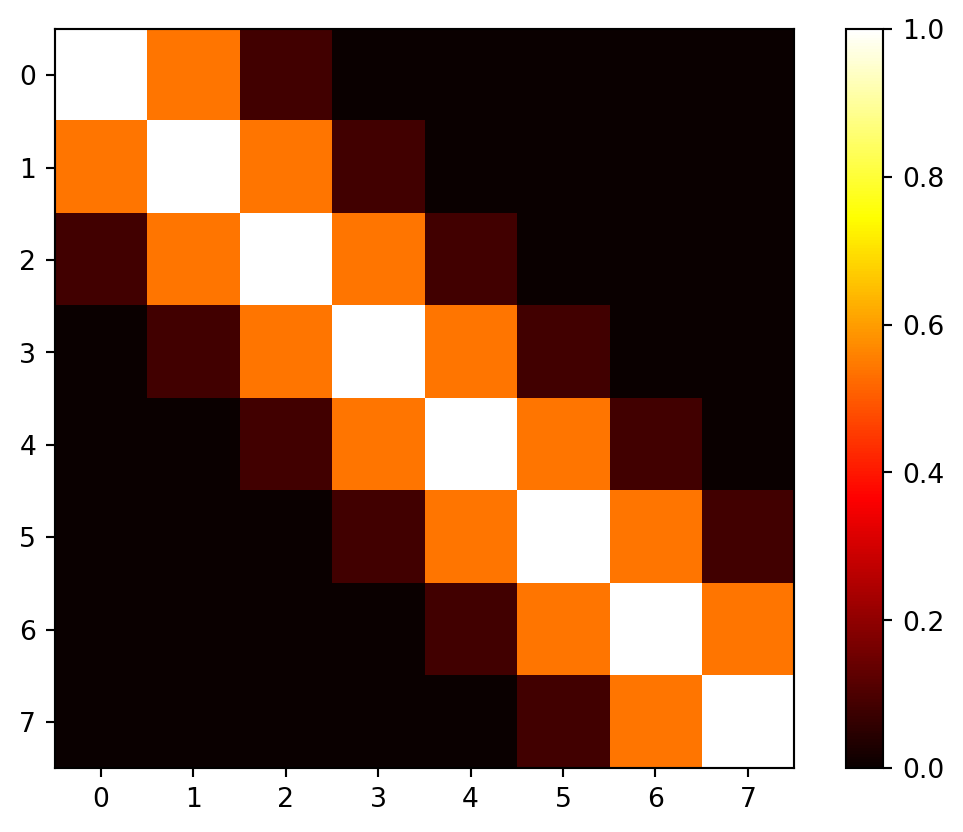
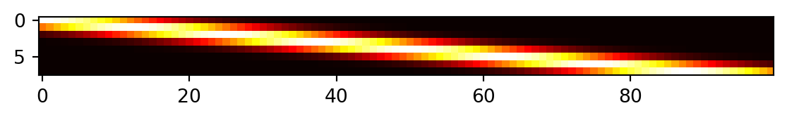
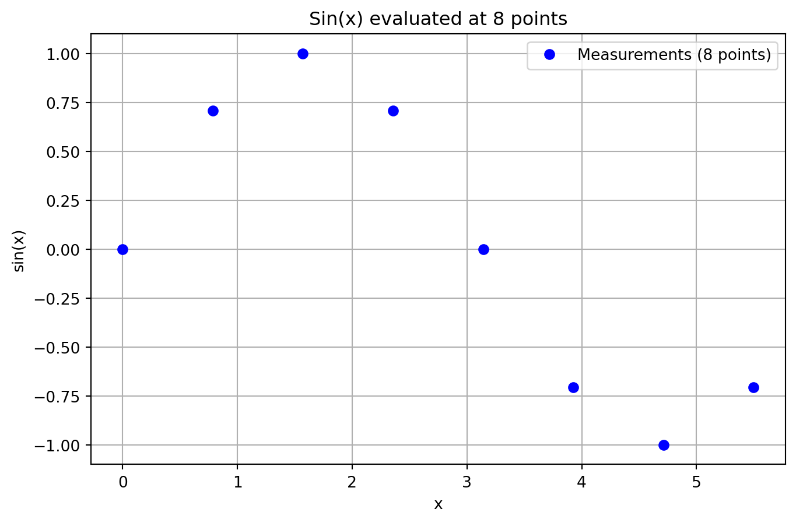
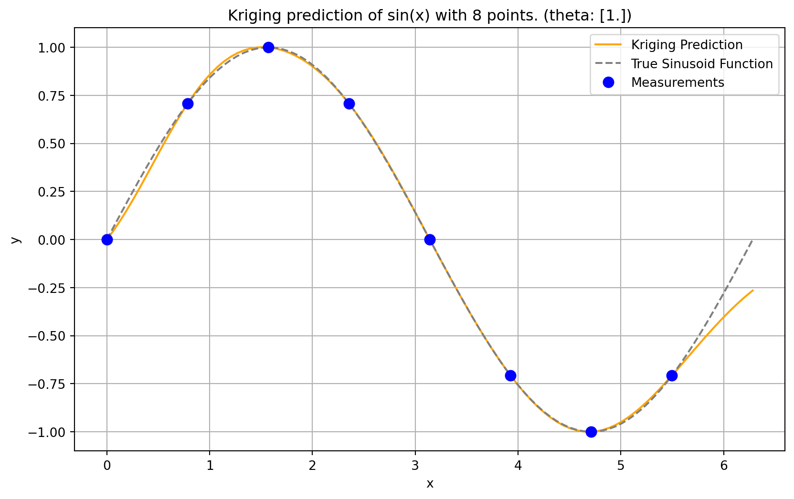

import matplotlib.pyplot as plt
import numpy as np
from numpy import (array, zeros, power, ones, exp, multiply,
eye, linspace, spacing, sqrt, arange,
append, ravel)
from numpy.linalg import cholesky, solve
from scipy.spatial.distance import squareform, pdist, cdist9 Kriging (Gaussian Process Regression)
Note
- This section is based on chapter 2.4 in Forrester, Sóbester, and Keane (2008).
- The following Python packages are imported:
9.1 From Gaussian RBF to Kriging Basis Functions
Kriging can be explained using the concept of radial basis functions (RBFs), which were introduced in Chapter 8. An RBF is a real-valued function whose value depends only on the distance from a certain point, called the center, usually in a multidimensional space. The basis function is a function of the distance between the point \(\vec{x}\) and the center \(\vec{x}^{(i)}\). Other names for basis functions are kernel or covariance functions.
Definition 9.1 (The Kriging Basis Functions) Kriging (also known as Gaussian Process Regression) uses \(k\)-dimensional basis functions of the form \[ \psi^{(i)}(\vec{x}) = \psi(\vec{x}^{(i)}, \vec{x}) = \exp \left( - \sum_{j=1}^k \theta_j | x_{j}^{(i)} - x_{j} | ^{p_j} \right), \tag{9.1}\] where \(\vec{x}\) and \(\vec{x}^{(i)}\) denote the \(k\)-dim vector \(\vec{x}= (x_1, \ldots, x_k)^T\) and \(\vec{x}^{(i)}= (x_1^{(i)}, \ldots, x_k^{(i)})^T\), respectively.
\(\Box\)
Kriging uses a specialized basis function that offers greater flexibility than standard RBFs. Examining Equation 9.1, we can observe how Kriging builds upon and extends the Gaussian basis concept. The key enhancements of Kriging over Gaussian RBF can be summarized as follows:
- Dimension-specific width parameters: While a Gaussian RBF uses a single width parameter \(1/\sigma^2\), Kriging employs a vector \(\vec{\theta} = (\theta_1, \theta_2, \ldots, \theta_k)^T\). This allows the model to automatically adjust its sensitivity to each input dimension, effectively performing automatic feature relevance determination.
- Flexible smoothness control: The Gaussian RBF fixes the exponent at 2, producing uniformly smooth functions. In contrast, Kriging’s dimension-specific exponents \(\vec{p} = (p_1, p_2, \ldots, p_k)^T\) (typically with \(p_j \in [1, 2]\)) enable precise control over smoothness properties in each dimension.
- Unifying framework: When all exponents are set to \(p_j = 2\) and all width parameters are equal (\(\theta_j = 1/\sigma^2\) for all \(j\)), the Kriging basis function reduces exactly to the Gaussian RBF. This makes Gaussian RBF a special case within the more general Kriging framework.
These enhancements make Kriging particularly well-suited for engineering problems where variables may operate at different scales or exhibit varying degrees of smoothness across dimensions. For now, we will only consider Kriging interpolation. We will cover Kriging regression later.
9.2 Building the Kriging Model
Consider sample data \(X\) and \(\vec{y}\) from \(n\) locations that are available in matrix form: \(X\) is a \((n \times k)\) matrix, where \(k\) denotes the problem dimension and \(\vec{y}\) is a \((n\times 1)\) vector. We want to find an expression for a predicted values at a new point \(\vec{x}\), denoted as \(\hat{y}\).
We start with an abstract, not really intuitive concept: The observed responses \(\vec{y}\) are considered as if they are from a stochastic process, which will be denoted as \[ \begin{pmatrix} Y(\vec{x}^{(1)})\\ \vdots\\ Y(\vec{x}^{(n)})\\ \end{pmatrix}. \tag{9.2}\]
The set of random vectors from Equation 9.2 (also referred to as a random field) has a mean of \(\vec{1} \mu\), which is a \((n\times 1)\) vector. The random vectors are correlated with each other using the basis function expression from Equation 9.1: \[ \text{cor} \left(Y(\vec{x}^{(i)}),Y(\vec{x}^{(l)}) \right) = \exp\left(- \sum_{j=1}^k \theta_j |x_j^{(i)} - x_j^{(l)} |^{p_j}\right). \tag{9.3}\] Using Equation 9.3, we can compute the \((n \times n)\) correlation matrix \(\Psi\) of the observed sample data as shown in Equation 9.4,
\[ \Psi = \begin{pmatrix} \text{cor}\left( Y(\vec{x}^{(1)}), Y(\vec{x}^{(1)}) \right) & \ldots & \text{cor}\left( Y(\vec{x}^{(1)}), Y(\vec{x}^{(n)}) \right)\\ \vdots & \vdots & \vdots\\ \text{cor}\left( Y(\vec{x}^{(n)}), Y(\vec{x}^{(1)}) \right)& \ldots & \text{cor}\left( Y(\vec{x}^{(n)}), Y(\vec{x}^{(n)}) \right) \end{pmatrix}, \tag{9.4}\]
and a covariance matrix as shown in Equation 9.5,
\[ \text{Cov}(Y, Y ) = \sigma^2\Psi. \tag{9.5}\]
This assumed correlation between the sample data reflects our expectation that an engineering function will behave in a certain way and it will be smoothly and continuous.
Remark 9.1 (Note on Stochastic Processes). See Section D.4 for a more detailed discussion on realizations of stochastic processes.
\(\Box\)
We now have a set of \(n\) random variables (\(\mathbf{Y}\)) that are correlated with each other as described in the \((n \times n)\) correlation matrix \(\Psi\), see Equation 9.4. The correlations depend on the absolute distances in dimension \(j\) between the \(i\)-th and the \(l\)-th sample point \(|x_j^{(i)} - x_j^{(l)}|\) and the corresponding parameters \(p_j\) and \(\theta_j\) for dimension \(j\). The correlation is intuitive, because when
- two points move close together, then \(|x_j^{(i)} - x_j| \to 0\) and \(\exp \left(-|x_j^{(i)} - x_j|^{p_j} \right) \to 1\) (these points show very close correlation and \(Y(x_j^{(i)}) = Y(x_j)\)).
- two points move far apart, then \(|x_j^{(i)} - x_j| \to \infty\) and \(\exp \left(-|x_j^{(i)} - x_j|^{p_j} \right) \to 0\) (these points show very low correlation).
Example 9.1 (Correlations for different \(p_j\)) Three different correlations are shown in Figure 9.1: \(p_j= 0.1, 1, 2\). The smoothness parameter \(p_j\) affects the correlation:
- With \(p_j=0.1\), there is basicaly no immediate correlation between the points and there is a near discontinuity between the points \(Y(\vec{x}_j^{(i)})\) and \(Y(\vec{x}_j)\).
- With \(p_j=2\), the correlation is more smooth and we have a continuous gradient through \(x_j^{(i)} - x_j\).
Reducing \(p_j\) increases the rate at which the correlation initially drops with distance. This is shown in Figure 9.1.

\(\Box\)
Example 9.2 (Correlations for different \(\theta\)) Figure 9.2 visualizes the correlation between two points \(Y(\vec{x}_j^{(i)})\) and \(Y(\vec{x}_j)\) for different values of \(\theta\). The parameter \(\theta\) can be seen as a width parameter:
- low \(\theta_j\) means that all points will have a high correlation, with \(Y(x_j)\) being similar across the sample.
- high \(\theta_j\) means that there is a significant difference between the \(Y(x_j)\)’s.
- \(\theta_j\) is a measure of how active the function we are approximating is.
- High \(\theta_j\) indicate important parameters, see Figure 9.2.

\(\Box\)
Considering the activity parameter \(\theta\) is useful in high-dimensional problems where it is difficult to visualize the design landscape and the effect of the variable is unknown. By examining the elements of the vector \(\vec{\theta}\), we can identify the most important variables and focus on them. This is a crucial step in the optimization process, as it allows us to reduce the dimensionality of the problem and focus on the most important variables.
Example 9.3 (The Correlation Matrix (Detailed Computation)) Let \(n=4\) and \(k=3\). The sample plan is represented by the following matrix \(X\): \[ X = \begin{pmatrix} x_{11} & x_{12} & x_{13}\\ x_{21} & x_{22} & x_{23}\\ x_{31} & x_{32} & x_{33}\\ x_{41} & x_{42} & x_{43}\\ \end{pmatrix} \]
To compute the elements of the matrix \(\Psi\), the following \(k\) (one for each of the \(k\) dimensions) \((n,n)\)-matrices have to be computed:
For \(k=1\), i.e., the first column of \(X\): \[ D_1 = \begin{pmatrix} x_{11} - x_{11} & x_{11} - x_{21} & x_{11} -x_{31} & x_{11} - x_{41} \\ x_{21} - x_{11} & x_{21} - x_{21} & x_{21} -x_{31} & x_{21} - x_{41} \\ x_{31} - x_{11} & x_{31} - x_{21} & x_{31} -x_{31} & x_{31} - x_{41} \\ x_{41} - x_{11} & x_{41} - x_{21} & x_{41} -x_{31} & x_{41} - x_{41} \\ \end{pmatrix} \]
For \(k=2\), i.e., the second column of \(X\): \[ D_2 = \begin{pmatrix} x_{12} - x_{12} & x_{12} - x_{22} & x_{12} -x_{32} & x_{12} - x_{42} \\ x_{22} - x_{12} & x_{22} - x_{22} & x_{22} -x_{32} & x_{22} - x_{42} \\ x_{32} - x_{12} & x_{32} - x_{22} & x_{32} -x_{32} & x_{32} - x_{42} \\ x_{42} - x_{12} & x_{42} - x_{22} & x_{42} -x_{32} & x_{42} - x_{42} \\ \end{pmatrix} \]
For \(k=3\), i.e., the third column of \(X\): \[ D_3 = \begin{pmatrix} x_{13} - x_{13} & x_{13} - x_{23} & x_{13} -x_{33} & x_{13} - x_{43} \\ x_{23} - x_{13} & x_{23} - x_{23} & x_{23} -x_{33} & x_{23} - x_{43} \\ x_{33} - x_{13} & x_{33} - x_{23} & x_{33} -x_{33} & x_{33} - x_{43} \\ x_{43} - x_{13} & x_{43} - x_{23} & x_{43} -x_{33} & x_{43} - x_{43} \\\end{pmatrix} \]
Since the matrices are symmetric and the main diagonals are zero, it is sufficient to compute the following matrices: \[ D_1 = \begin{pmatrix} 0 & x_{11} - x_{21} & x_{11} -x_{31} & x_{11} - x_{41} \\ 0 & 0 & x_{21} -x_{31} & x_{21} - x_{41} \\ 0 & 0 & 0 & x_{31} - x_{41} \\ 0 & 0 & 0 & 0 \\\end{pmatrix} \] \[ D_2 = \begin{pmatrix} 0 & x_{12} - x_{22} & x_{12} -x_{32} & x_{12} - x_{42} \\ 0 & 0 & x_{22} -x_{32} & x_{22} - x_{42} \\ 0 & 0 & 0 & x_{32} - x_{42} \\ 0 & 0 & 0 & 0 \\ \end{pmatrix} \]
\[ D_3 = \begin{pmatrix} 0 & x_{13} - x_{23} & x_{13} -x_{33} & x_{13} - x_{43} \\ 0 & 0 & x_{23} -x_{33} & x_{23} - x_{43} \\ 0 & 0 & 0 & x_{33} - x_{43} \\ 0 & 0 & 0 & 0 \\\end{pmatrix} \]
We will consider \(p_l=2\). The differences will be squared and multiplied by \(\theta_i\), i.e.:
\[ D_1 = \theta_1 \begin{pmatrix} 0 & (x_{11} - x_{21})^2 & (x_{11} -x_{31})^2 & (x_{11} - x_{41})^2 \\ 0 & 0 & (x_{21} -x_{31})^2 & (x_{21} - x_{41})^2 \\ 0 & 0 & 0 & (x_{31} - x_{41})^2 \\ 0 & 0 & 0 & 0 \\\end{pmatrix} \]
\[ D_2 = \theta_2 \begin{pmatrix} 0 & (x_{12} - x_{22})^2 & (x_{12} -x_{32})^2 & (x_{12} - x_{42})^2 \\ 0 & 0 & (x_{22} -x_{32})^2 & (x_{22} - x_{42})^2 \\ 0 & 0 & 0 & (x_{32} - x_{42})^2 \\ 0 & 0 & 0 & 0 \\\end{pmatrix} \]
\[ D_3 = \theta_3 \begin{pmatrix} 0 & (x_{13} - x_{23})^2 & (x_{13} -x_{33})^2 & (x_{13} - x_{43})^2 \\ 0 & 0 & (x_{23} -x_{33})^2 & (x_{23} - x_{43})^2 \\ 0 & 0 & 0 & (x_{33} - x_{43})^2 \\ 0 & 0 & 0 & 0 \\\end{pmatrix} \]
The sum of the three matrices \(D=D_1+ D_2 + D_3\) will be calculated next:
\[ \begin{pmatrix} 0 & \theta_1 (x_{11} - x_{21})^2 + \theta_2 (x_{12} - x_{22})^2 + \theta_3 (x_{13} - x_{23})^2 & \theta_1 (x_{11} -x_{31})^2 + \theta_2 (x_{12} -x_{32})^2 + \theta_3 (x_{13} -x_{33})^2 & \theta_1 (x_{11} - x_{41})^2 + \theta_2 (x_{12} - x_{42})^2 + \theta_3 (x_{13} - x_{43})^2 \\ 0 & 0 & \theta_1 (x_{21} -x_{31})^2 + \theta_2 (x_{22} -x_{32})^2 + \theta_3 (x_{23} -x_{33})^2 & \theta_1 x_{21} - x_{41})^2 + \theta_2 (x_{22} - x_{42})^2 + \theta_3 (x_{23} - x_{43})^2 \\ 0 & 0 & 0 & \theta_1 (x_{31} - x_{41})^2 + \theta_2 (x_{32} - x_{42})^2 + \theta_3 (x_{33} - x_{43})^2 \\ 0 & 0 & 0 & 0 \\\end{pmatrix} \]
Finally, \[ \Psi = \exp(-D)\] is computed.
Next, we will demonstrate how this computation can be implemented in Python. We will consider four points in three dimensions and compute the correlation matrix \(\Psi\) using the basis function from Equation 9.1. These points are placed at the origin, at the unit vectors, and at the points \((100, 100, 100)\) and \((101, 100, 100)\). So, they form two clusters: one at the origin and one at \((100, 100, 100)\).
theta = np.array([1,2,3])
X = np.array([ [1,0,0], [0,1,0], [100, 100, 100], [101, 100, 100]])
Xarray([[ 1, 0, 0],
[ 0, 1, 0],
[100, 100, 100],
[101, 100, 100]])def build_Psi(X, theta):
n = X.shape[0]
k = X.shape[1]
D = zeros((k, n, n))
for l in range(k):
for i in range(n):
for j in range(i, n):
D[l, i, j] = theta[l]*(X[i,l] - X[j,l])**2
D = sum(D)
D = D + D.T
return exp(-D) Psi = build_Psi(X, theta)
Psiarray([[1. , 0.04978707, 0. , 0. ],
[0.04978707, 1. , 0. , 0. ],
[0. , 0. , 1. , 0.36787944],
[0. , 0. , 0.36787944, 1. ]])

\(\Box\)
Example 9.4 (Example: The Correlation Matrix (Using Existing Functions)) The same result as computed in Example 9.3 can be obtained with existing python functions, e.g., from the package scipy.
def build_Psi(X, theta, eps=sqrt(spacing(1))):
return exp(- squareform(pdist(X,
metric='sqeuclidean',
out=None,
w=theta))) + multiply(eye(X.shape[0]),
eps)
Psi = build_Psi(X, theta, eps=.0)
Psiarray([[1. , 0.04978707, 0. , 0. ],
[0.04978707, 1. , 0. , 0. ],
[0. , 0. , 1. , 0.36787944],
[0. , 0. , 0.36787944, 1. ]])The condition number of the correlation matrix \(\Psi\) is a measure of how well the matrix can be inverted. A high condition number indicates that the matrix is close to singular, which can lead to numerical instability in computations involving the inverse of the matrix, see Section 10.2.
np.linalg.cond(Psi)np.float64(2.163953413738652)\(\Box\)
9.3 MLE to estimate \(\theta\) and \(p\)
9.3.1 The Log-Likelihood
Until now, the observed data \(\vec{y}\) was not used. We know what the correlations mean, but how do we estimate the values of \(\theta_j\) and where does our observed data \(y\) come in? To estimate the values of \(\vec{\theta}\) and \(\vec{p}\), they are chosen to maximize the likelihood of \(\vec{y}\), \[ L = L\left(Y(\vec{x}^{(1)}), \ldots, Y(\vec{x}^{(n)}) | \mu, \sigma \right) = \frac{1}{(2\pi \sigma^2)^{n/2}} \exp\left[ - \frac{\sum_{i=1}^n(Y(\vec{x}^{(i)})-\mu)^2}{2 \sigma^2}\right], \tag{9.6}\] where \(\mu\) is the mean of the observed data \(\vec{y}\) and \(\sigma\) is the standard deviation of the errors \(\epsilon\), which can be expressed in terms of the sample data \[ L = \frac{1}{(2\pi \sigma^2)^{n/2} |\vec{\Psi}|^{1/2}} \exp\left[ - \frac{(\vec{y} - \vec{1}\mu)^T \vec{\Psi}^{-1}(\vec{y} - \vec{1}\mu) }{2 \sigma^2}\right]. \tag{9.7}\]
Remark 9.2. The transition from Equation 9.6 to Equation 9.7 reflects a shift from assuming independent errors in the observed data to explicitly modeling the correlation structure between the observed responses, which is a key aspect of the stochastic process framework used in methods like Kriging. It can be explained as follows:
Initial Likelihood Expression (assuming independent errors): Equation 9.6 is an expression for the likelihood of the data set, which is based on the assumption that the errors \(\epsilon\) are independently randomly distributed according to a normal distribution with standard deviation \(\sigma\). This form is characteristic of the likelihood of \(n\) independent observations \(Y(\vec{x}^{(i)})\), each following a normal distribution with mean \(\mu\) and variance \(\sigma^2\).
Using Vector Notation. The sum in the exponent, i.e., \[ \sum_{i=1}^n(Y(\vec{x}^{(i)})-\mu)^2 \] is equivalent to \[ (\vec{y} - \vec{1}\mu)^T (\vec{y} - \vec{1}\mu), \] assuming \(Y(\vec{x}^{(i)}) = y^{(i)}\) and using vector notation for \(\vec{y}\) and \(\vec{1}\mu\).
Assuming Independent Observations: Equation 9.6 assumes that the observations are independent, which means that the covariance between any two observations \(Y(\vec{x}^{(i)})\) and \(Y(\vec{x}^{(l)})\) is zero for \(i \neq l\). In this case, the covariance matrix of the observations would be a diagonal matrix with \(\sigma^2\) along the diagonal (i.e., \(\sigma^2 I\)), where \(I\) is the identity matrix.
Stochastic Process and Correlation: In the context of Kriging, the observed responses \(\vec{y}\) are considered as if they are from a stochastic process or random field. This means the random variables \(Y(\vec{x}^{(i)})\) at different locations \(\vec{x}^{(i)}\) are not independent, but they correlated with each other. This correlation is described by an \((n \times n)\) correlation matrix \(\Psi\), which is used instead of \(\sigma^2 I\). The strength of the correlation between two points \(Y(\vec{x}^{(i)})\) and \(Y(\vec{x}^{(l)})\) depends on the distance between them and model parameters \(\theta_j\) and \(p_j\).
Multivariate Normal Distribution: When random variables are correlated, their joint probability distribution is generally described by a multivariate distribution. Assuming the stochastic process follows a Gaussian process, the joint distribution of the observed responses \(\vec{y}\) is a multivariate normal distribution. A multivariate normal distribution for a vector \(\vec{Y}\) with mean vector \(\vec{\mu}\) and covariance matrix \(\Sigma\) has a probability density function given by: \[ p(\vec{y}) = \frac{1}{\sqrt{(2\pi)^n |\Sigma|}} \exp\left[ -\frac{1}{2}(\vec{y} - \vec{\mu})^T \Sigma^{-1}(\vec{y} - \vec{\mu}) \right]. \]
Connecting the Expressions: In the stochastic process framework, the following holds:
- The mean vector of the observed data \(\vec{y}\) is \(\vec{1}\mu\).
- The covariance matrix \(\Sigma\) is constructed by considering both the variance \(\sigma^2\) and the correlations \(\Psi\).
- The covariance between \(Y(\vec{x}^{(i)})\) and \(Y(\vec{x}^{(l)})\) is \(\sigma^2 \text{cor}(Y(\vec{x}^{(i)}), Y(\vec{x}^{(l)}))\).
- Therefore, the covariance matrix is \(\Sigma = \sigma^2 \vec{\Psi}\).
- Substituting \(\vec{\mu} = \vec{1}\mu\) and \(\Sigma = \sigma^2 \vec{\Psi}\) into the multivariate normal PDF formula, we get: \[ \Sigma^{-1} = (\sigma^2 \vec{\Psi})^{-1} = \frac{1}{\sigma^2} \vec{\Psi}^{-1} \] and \[ |\Sigma| = |\sigma^2 \vec{\Psi}| = (\sigma^2)^n |\vec{\Psi}|. \] The PDF becomes: \[ p(\vec{y}) = \frac{1}{\sqrt{(2\pi)^n (\sigma^2)^n |\vec{\Psi}|}} \exp\left[ -\frac{1}{2}(\vec{y} - \vec{1}\mu)^T \left(\frac{1}{\sigma^2} \vec{\Psi}^{-1}\right)(\vec{y} - \vec{1}\mu) \right] \] and simplifies to: \[ p(\vec{y}) = \frac{1}{(2\pi \sigma^2)^{n/2} |\vec{\Psi}|^{1/2}} \exp\left[ -\frac{1}{2\sigma^2}(\vec{y} - \vec{1}\mu)^T \vec{\Psi}^{-1}(\vec{y} - \vec{1}\mu) \right]. \] This is the likelihood of the sample data \(\vec{y}\) given the parameters \(\mu\), \(\sigma\), and the correlation structure defined by the parameters within \(\vec{\Psi}\) (i.e., \(\vec{\theta}\) and \(\vec{p}\)).
In summary, the Equation 9.6 represents the likelihood under a simplified assumption of independent errors, whereas Equation 9.7 is the likelihood derived from the assumption that the observed data comes from a multivariate normal distribution where observations are correlated according to the matrix \(\vec{\Psi}\). Equation 9.7, using the sample data vector \(\vec{y}\) and the correlation matrix \(\vec{\Psi}\), properly accounts for the dependencies between data points inherent in the stochastic process model. Maximizing this likelihood is how the correlation parameters \(\vec{\theta}\) and \(\vec{p}\) are estimated in Kriging.
\(\Box\)
Equation 9.7 can be formulated as the log-likelihood: \[ \ln(L) = - \frac{n}{2} \ln(2\pi \sigma) - \frac{1}{2} \ln |\vec{\Psi}| - \frac{(\vec{y} - \vec{1}\mu)^T \vec{\Psi}^{-1}(\vec{y} - \vec{1}\mu) }{2 \sigma^2}. \tag{9.8}\]
9.3.2 Differentiation with Respect to \(\mu\)
Looking at the log-likelihood function, only the last term depends on \(\mu\):
\[ \frac{1}{2 \sigma^2} (\vec{y} - \vec{1}\mu)^T \vec{\Psi}^{-1} (\vec{y} - \vec{1}\mu) \]
To differentiate this with respect to the scalar \(\mu\), we can use matrix calculus rules.
Let \(\mathbf{v} = \vec{y} - \vec{1}\mu\). \(\vec{y}\) is a constant vector with respect to \(\mu\), and \(\vec{1}\mu\) is a vector whose derivative with respect to the scalar \(\mu\) is \(\vec{1}\). So, \(\frac{\partial \mathbf{v}}{\partial \mu} = -\vec{1}\).
The term is in the form \(\mathbf{v}^T \mathbf{A} \mathbf{v}\), where \(\mathbf{A} = \vec{\Psi}^{-1}\) is a symmetric matrix. The derivative of \(\mathbf{v}^T \mathbf{A} \mathbf{v}\) with respect to \(\mathbf{v}\) is \(2 \mathbf{A} \mathbf{v}\) as explained in Remark 9.3.
Remark 9.3 (Derivative of a Quadratic Form). Consider the derivative of \(\mathbf{v}^T \mathbf{A} \mathbf{v}\) with respect to \(\mathbf{v}\):
- The derivative of a scalar function \(f(\mathbf{v})\) with respect to a vector \(\mathbf{v}\) is a vector (the gradient).
- For a quadratic form \(\mathbf{v}^T \mathbf{A} \mathbf{v}\), where \(\mathbf{A}\) is a matrix and \(\mathbf{v}\) is a vector, the general formula for the derivative with respect to \(\mathbf{v}\) is \(\frac{\partial}{\partial \mathbf{v}} (\mathbf{v}^T \mathbf{A} \mathbf{v}) = \mathbf{A} \mathbf{v} + \mathbf{A}^T \mathbf{v}\). (This is a standard result in matrix calculus and explained in Equation 10.1).
- Since \(\mathbf{A} = \vec{\Psi}^{-1}\) is a symmetric matrix, its transpose \(\mathbf{A}^T\) is equal to \(\mathbf{A}\).
- Substituting \(\mathbf{A}^T = \mathbf{A}\) into the general derivative formula, we get \(\mathbf{A} \mathbf{v} + \mathbf{A} \mathbf{v} = 2 \mathbf{A} \mathbf{v}\).
\(\Box\)
Using the chain rule for differentiation with respect to the scalar \(\mu\): \[ \frac{\partial}{\partial \mu} (\mathbf{v}^T \mathbf{A} \mathbf{v}) = 2 \left(\frac{\partial \mathbf{v}}{\partial \mu}\right)^T \mathbf{A} \mathbf{v} \] Substituting \(\frac{\partial \mathbf{v}}{\partial \mu} = -\vec{1}\) and \(\mathbf{v} = \vec{y} - \vec{1}\mu\): \[ \frac{\partial}{\partial \mu} (\vec{y} - \vec{1}\mu)^T \vec{\Psi}^{-1} (\vec{y} - \vec{1}\mu) = 2 (-\vec{1})^T \vec{\Psi}^{-1} (\vec{y} - \vec{1}\mu) = -2 \vec{1}^T \vec{\Psi}^{-1} (\vec{y} - \vec{1}\mu) \]
Now, differentiate the full log-likelihood term depending on \(\mu\):
\[ \frac{\partial}{\partial \mu} \left( - \frac{1}{2 \sigma^2} (\vec{y} - \vec{1}\mu)^T \vec{\Psi}^{-1} (\vec{y} - \vec{1}\mu) \right) = - \frac{1}{2 \sigma^2} \left( -2 \vec{1}^T \vec{\Psi}^{-1} (\vec{y} - \vec{1}\mu) \right) = \frac{1}{\sigma^2} \vec{1}^T \vec{\Psi}^{-1} (\vec{y} - \vec{1}\mu) \]
Setting this to zero for maximization gives:
\[ \frac{1}{\sigma^2} \vec{1}^T \vec{\Psi}^{-1} (\vec{y} - \vec{1}\mu) = 0. \]
Rearranging gives: \[ \vec{1}^T \vec{\Psi}^{-1} (\vec{y} - \vec{1}\mu) = 0. \]
Solving for \(\mu\) gives: \[ \vec{1}^T \vec{\Psi}^{-1} \vec{y} = \mu \vec{1}^T \vec{\Psi}^{-1} \vec{1}. \]
9.3.3 Differentiation with Respect to \(\sigma\)
Let \(\nu = \sigma^2\) for simpler differentiation notation. The log-likelihood becomes: \[ \ln(L) = C_1 - \frac{n}{2} \ln(\nu) - \frac{(\vec{y} - \vec{1}\mu)^T \vec{\Psi}^{-1}(\vec{y} - \vec{1}\mu)}{2\nu}, \] where \(C_1 = - \frac{n}{2} \ln(2\pi) - \frac{1}{2} \ln |\vec{\Psi}|\) is a constant with respect to \(\nu = \sigma^2\).
We differentiate with respect to \(\nu\): \[ \frac{\partial \ln(L)}{\partial \nu} = \frac{\partial}{\partial \nu} \left( -\frac{n}{2} \ln(\nu) \right) + \frac{\partial}{\partial \nu} \left( - \frac{(\vec{y} - \vec{1}\mu)^T \vec{\Psi}^{-1}(\vec{y} - \vec{1}\mu)}{2\nu} \right). \]
The first term’s derivative is straightforward: \[ \frac{\partial}{\partial \nu} \left( -\frac{n}{2} \ln(\nu) \right) = -\frac{n}{2} \cdot \frac{1}{\nu} = -\frac{n}{2\sigma^2}. \]
For the second term, let \(C_2 = (\vec{y} - \vec{1}\mu)^T \vec{\Psi}^{-1}(\vec{y} - \vec{1}\mu)\). This term is constant with respect to \(\sigma^2\). The derivative is:
\[ \frac{\partial}{\partial \nu} \left( - \frac{C_2}{2\nu} \right) = - \frac{C_2}{2} \frac{\partial}{\partial \nu} (\nu^{-1}) = - \frac{C_2}{2} (-\nu^{-2}) = \frac{C_2}{2\nu^2} = \frac{(\vec{y} - \vec{1}\mu)^T \vec{\Psi}^{-1}(\vec{y} - \vec{1}\mu)}{2(\sigma^2)^2}. \]
Combining the derivatives, the gradient of the log-likelihood with respect to \(\sigma^2\) is: \[ \frac{\partial \ln(L)}{\partial \sigma^2} = -\frac{n}{2\sigma^2} + \frac{(\vec{y} - \vec{1}\mu)^T \vec{\Psi}^{-1}(\vec{y} - \vec{1}\mu)}{2(\sigma^2)^2}. \]
Setting this to zero for maximization gives: \[ -\frac{n}{2\sigma^2} + \frac{(\vec{y} - \vec{1}\mu)^T \vec{\Psi}^{-1}(\vec{y} - \vec{1}\mu)}{2(\sigma^2)^2} = 0. \]
9.3.4 Results of the Optimizations
Optimization of the log-likelihood by taking derivatives with respect to \(\mu\) and \(\sigma\) results in \[ \hat{\mu} = \frac{\vec{1}^T \vec{\Psi}^{-1} \vec{y}^T}{\vec{1}^T \vec{\Psi}^{-1} \vec{1}^T} \tag{9.9}\] and \[ \hat{\sigma}^2 = \frac{(\vec{y} - \vec{1}\mu)^T \vec{\Psi}^{-1}(\vec{y} - \vec{1}\mu)}{n}. \tag{9.10}\]
9.3.5 The Concentrated Log-Likelihood Function
Combining the equations, i.e., substituting Equation 9.9 and Equation 9.10 into Equation 9.8 leads to the concentrated log-likelihood function: \[ \ln(L) \approx - \frac{n}{2} \ln(\hat{\sigma}) - \frac{1}{2} \ln |\vec{\Psi}|. \tag{9.11}\]
Remark 9.4 (The Concentrated Log-Likelihood).
- The first term in Equation 9.11 requires information about the measured point (observations) \(y_i\).
- To maximize \(\ln(L)\), optimal values of \(\vec{\theta}\) and \(\vec{p}\) are determined numerically, because the function (Equation 9.11) is not differentiable.
\(\Box\)
9.3.6 Optimizing the Parameters \(\vec{\theta}\) and \(\vec{p}\)
The concentrated log-likelihood function is very quick to compute. We do not need a statistical model, because we are only interested in the maximum likelihood estimate (MLE) of \(\theta\) and \(p\). Optimizers such as Nelder-Mead, Conjugate Gradient, or Simulated Annealing can be used to determine optimal values for \(\theta\) and \(p\). After the optimization, the correlation matrix \(\Psi\) is build with the optimized \(\theta\) and \(p\) values. This is best (most likely) Kriging model for the given data \(y\).
Observing Figure 9.2, there’s significant change between \(\theta = 0.1\) and \(\theta = 1\), just as there is between \(\theta = 1\) and \(\theta = 10\). Hence, it is sensible to search for \(\theta\) on a logarithmic scale. Suitable search bounds typically range from \(10^{-3}\) to \(10^2\), although this is not a stringent requirement. Importantly, the scaling of the observed data does not affect the values of \(\hat{\theta}\), but the scaling of the design space does. Therefore, it is advisable to consistently scale variable ranges between zero and one to ensure consistency in the degree of activity \(\hat{\theta}_j\) represents across different problems.
9.3.7 Correlation and Covariance Matrices Revisited
The covariance matrix \(\Sigma\) is constructed by considering both the variance \(\sigma^2\) and the correlation matrix \(\Psi\). They are related as follows:
- Covariance vs. Correlation: Covariance is a measure of the joint variability of two random variables, while correlation is a standardized measure of this relationship, ranging from -1 to 1. The relationship between covariance and correlation for two random variables \(X\) and \(Y\) is given by \(\text{cor}(X, Y) = \text{cov}(X, Y) / (\sigma_X \sigma_Y)\), where \(\sigma_X\) and \(\sigma_Y\) are their standard deviations.
- The Covariance Matrix \(\Sigma\): The covariance matrix \(\Sigma\) (or \(\text{Cov}(Y, Y)\) for the vector \(\vec{Y}\)) captures the pairwise covariances between all elements of the vector of observed responses.
- Connecting \(\sigma^2\) and \(\Psi\) to \(\Sigma\): In the Kriging framework described, the variance of each observation is often assumed to be constant, \(\sigma^2\). The covariance between any two observations \(Y(\vec{x}^{(i)})\) and \(Y(\vec{x}^{(l)})\) is given by \(\sigma^2\) multiplied by their correlation. That is, \[ \text{cov}(Y(\vec{x}^{(i)}), Y(\vec{x}^{(l)})) = \sigma^2 \text{cor}(Y(\vec{x}^{(i)}), Y(\vec{x}^{(l)})). \] This relationship holds for all pairs of points. When expressed in matrix form, the covariance matrix \(\Sigma\) is the product of the variance \(\sigma^2\) (a scalar) and the correlation matrix \(\Psi\): \[ \Sigma = \sigma^2 \Psi. \]
In essence, the correlation matrix \(\Psi\) defines the structure or shape of the dependencies between the data points based on their locations. The parameter \(\sigma^2\) acts as a scaling factor that converts these unitless correlation values (which are between -1 and 1) into actual covariance values with units of variance, setting the overall level of variability in the system.
So, \(\sigma^2\) tells us about the general spread or variability of the underlying process, while \(\Psi\) tells you how that variability is distributed and how strongly points are related to each other based on their positions. Together, they completely define the covariance structure of your observed data in the multivariate normal distribution used in Kriging.
9.4 Implementing an MLE of the Model Parameters
The matrix algebra necessary for calculating the likelihood is the most computationally intensive aspect of the Kriging process. It is crucial to ensure that the code implementation is as efficient as possible.
Given that \(\Psi\) (our correlation matrix) is symmetric, only half of the matrix needs to be computed before adding it to its transpose. When calculating the log-likelihood, several matrix inversions are required. The fastest approach is to conduct one Cholesky factorization and then apply backward and forward substitution for each inverse.
The Cholesky factorization is applicable only to positive-definite matrices, which \(\Psi\) generally is. However, if \(\Psi\) becomes nearly singular, such as when the \(\vec{x}^{(i)}\)’s are densely packed, the Cholesky factorization might fail. In these cases, one could employ an LU-decomposition, though the result might be unreliable. When \(\Psi\) is near singular, the best course of action is to either use regression techniques or, as we do here, assign a poor likelihood value to parameters generating the near singular matrix, thus diverting the MLE search towards better-conditioned \(\Psi\) matrices.
When working with correlation matrices, increasing the values on the main diagonal of a matrix will increase the absolute value of its determinant. A critical numerical consideration in calculating the concentrated log-likelihood is that for poorly conditioned matrices, \(\det(\Psi)\) approaches zero, leading to potential numerical instability. To address this issue, it is advisable to calculate \(\ln(\lvert\Psi\rvert)\) in Equation 9.11 using twice the sum of the logarithms of the diagonal elements of the Cholesky factorization. This approach provides a more numerically stable method for computing the log-determinant, as the Cholesky decomposition \(\Psi = L L^T\) allows us to express \(\ln(\lvert\Psi\rvert) = 2\sum_{i=1}^{n} \ln(L_{ii})\), avoiding the direct computation of potentially very small determinant values.
9.5 Kriging Prediction
We will use the Kriging correlation \(\Psi\) to predict new values based on the observed data. The presentation follows the approach described in Forrester, Sóbester, and Keane (2008) and Bartz et al. (2022).
Main idea for prediction is that the new \(Y(\vec{x})\) should be consistent with the old sample data \(X\). For a new prediction \(\hat{y}\) at \(\vec{x}\), the value of \(\hat{y}\) is chosen so that it maximizes the likelihood of the sample data \(X\) and the prediction, given the (optimized) correlation parameter \(\vec{\theta}\) and \(\vec{p}\) from above. The observed data \(\vec{y}\) is augmented with the new prediction \(\hat{y}\) which results in the augmented vector \(\vec{\tilde{y}} = ( \vec{y}^T, \hat{y})^T\). A vector of correlations between the observed data and the new prediction is defined as
\[ \vec{\psi} = \begin{pmatrix} \text{cor}\left( Y(\vec{x}^{(1)}), Y(\vec{x}) \right) \\ \vdots \\ \text{cor}\left( Y(\vec{x}^{(n)}), Y(\vec{x}) \right) \end{pmatrix} = \begin{pmatrix} \vec{\psi}^{(1)}\\ \vdots\\ \vec{\psi}^{(n)} \end{pmatrix}. \]
Definition 9.2 (The Augmented Correlation Matrix) The augmented correlation matrix is constructed as \[ \tilde{\vec{\Psi}} = \begin{pmatrix} \vec{\Psi} & \vec{\psi} \\ \vec{\psi}^T & 1 \end{pmatrix}. \]
\(\Box\)
The log-likelihood of the augmented data is \[ \ln(L) = - \frac{n}{2} \ln(2\pi) - \frac{n}{2} \ln(\hat{\sigma}^2) - \frac{1}{2} \ln |\vec{\hat{\Psi}}| - \frac{(\vec{\tilde{y}} - \vec{1}\hat{\mu})^T \vec{\tilde{\Psi}}^{-1}(\vec{\tilde{y}} - \vec{1}\hat{\mu})}{2 \hat{\sigma}^2}, \tag{9.12}\]
where \(\vec{1}\) is a vector of ones and \(\hat{\mu}\) and \(\hat{\sigma}^2\) are the MLEs from Equation 9.9 and Equation 9.10. Only the last term in Equation 9.12 depends on \(\hat{y}\), so we need only consider this term in the maximization. Details can be found in Forrester, Sóbester, and Keane (2008). Finally, the MLE for \(\hat{y}\) can be calculated as \[ \hat{y}(\vec{x}) = \hat{\mu} + \vec{\psi}^T \vec{\tilde{\Psi}}^{-1} (\vec{y} - \vec{1}\hat{\mu}). \tag{9.13}\]
Equation 9.13 reveals two important properties of the Kriging predictor:
- Basis functions: The basis function impacts the vector \(\vec{\psi}\), which contains the \(n\) correlations between the new point \(\vec{x}\) and the observed locations. Values from the \(n\) basis functions are added to a mean base term \(\mu\) with weightings \[ \vec{w} = \vec{\tilde{\Psi}}^{(-1)} (\vec{y} - \vec{1}\hat{\mu}). \]
- Interpolation: The predictions interpolate the sample data. When calculating the prediction at the \(i\)th sample point, \(\vec{x}^{(i)}\), the \(i\)th column of \(\vec{\Psi}^{-1}\) is \(\vec{\psi}\), and \(\vec{\psi} \vec{\Psi}^{-1}\) is the \(i\)th unit vector. Hence,
\[ \hat{y}(\vec{x}^{(i)}) = y^{(i)}. \]
9.6 Kriging Example: Sinusoid Function
Toy example in 1d where the response is a simple sinusoid measured at eight equally spaced \(x\)-locations in the span of a single period of oscillation.
9.6.1 Calculating the Correlation Matrix \(\Psi\)
The correlation matrix \(\Psi\) is based on the pairwise squared distances between the input locations. Here we will use \(n=8\) sample locations and \(\theta\) is set to 1.0.
n = 8
X = np.linspace(0, 2*np.pi, n, endpoint=False).reshape(-1,1)
print(np.round(X, 2))[[0. ]
[0.79]
[1.57]
[2.36]
[3.14]
[3.93]
[4.71]
[5.5 ]]Evaluate at sample points
y = np.sin(X)
print(np.round(y, 2))[[ 0. ]
[ 0.71]
[ 1. ]
[ 0.71]
[ 0. ]
[-0.71]
[-1. ]
[-0.71]]We have the data points shown in Table 9.1.
| \(x\) | \(y\) |
|---|---|
| 0.0 | 0.0 |
| 0.79 | 0.71 |
| 1.57 | 1.0 |
| 2.36 | 0.71 |
| 3.14 | 0.0 |
| 3.93 | -0.71 |
| 4.71 | -1.0 |
| 5.5 | -0.71 |
The data points are visualized in Figure 9.4.
plt.plot(X, y, "bo")
plt.title(f"Sin(x) evaluated at {n} points")
plt.grid()
plt.show()

9.6.2 Computing the \(\Psi\) Matrix
We will use the build_Psi function from Example 9.4 to compute the correlation matrix \(\Psi\). \(\theta\) should be an array of one value, because we are only working in one dimension (\(k=1\)).
theta = np.array([1.0])
Psi = build_Psi(X, theta)
print(np.round(Psi, 2))[[1. 0.54 0.08 0. 0. 0. 0. 0. ]
[0.54 1. 0.54 0.08 0. 0. 0. 0. ]
[0.08 0.54 1. 0.54 0.08 0. 0. 0. ]
[0. 0.08 0.54 1. 0.54 0.08 0. 0. ]
[0. 0. 0.08 0.54 1. 0.54 0.08 0. ]
[0. 0. 0. 0.08 0.54 1. 0.54 0.08]
[0. 0. 0. 0. 0.08 0.54 1. 0.54]
[0. 0. 0. 0. 0. 0.08 0.54 1. ]]Figure 9.5 visualizes the \((8, 8)\) correlation matrix \(\Psi\).

9.6.3 Selecting the New Locations
We would like to predict at \(m = 100\) new locations (or testign locations) in the interval \([0, 2\pi]\). The new locations are stored in the variable x.
m = 100
x = np.linspace(0, 2*np.pi, m, endpoint=False).reshape(-1,1)9.6.4 Computing the \(\psi\) Vector
Distances between testing locations \(x\) and training data locations \(X\).
def build_psi(X, x, theta, eps=sqrt(spacing(1))):
n = X.shape[0]
k = X.shape[1]
m = x.shape[0]
psi = zeros((n, m))
theta = theta * ones(k)
D = zeros((n, m))
D = cdist(x.reshape(-1, k),
X.reshape(-1, k),
metric='sqeuclidean',
out=None,
w=theta)
psi = exp(-D)
# return psi transpose to be consistent with the literature
print(f"Dimensions of psi: {psi.T.shape}")
return(psi.T)
psi = build_psi(X, x, theta)Dimensions of psi: (8, 100)Figure 9.6 visualizes the \((8, 100)\) prediction matrix \(\psi\).

9.6.5 Predicting at New Locations
Computation of the predictive equations.
U = cholesky(Psi).T
one = np.ones(n).reshape(-1,1)
mu = (one.T.dot(solve(U, solve(U.T, y)))) / one.T.dot(solve(U, solve(U.T, one)))
f = mu * ones(m).reshape(-1,1) + psi.T.dot(solve(U, solve(U.T, y - one * mu)))
print(f"Dimensions of f: {f.shape}")Dimensions of f: (100, 1)To compute \(f\), Equation 9.13 is used.
9.6.6 Visualization
plt.plot(x, f, color = "orange", label="Fitted")
plt.plot(x, np.sin(x), color = "grey", label="Original")
plt.plot(X, y, "bo", label="Measurements")
plt.title("Kriging prediction of sin(x) with {} points.\n theta: {}".format(n, theta[0]))
plt.legend(loc='upper right')
plt.show()
9.6.7 The Complete Python Code for the Example
Here is the self-contained Python code for direct use in a notebook:
import numpy as np
import matplotlib.pyplot as plt
from numpy import (array, zeros, power, ones, exp, multiply, eye, linspace, spacing, sqrt, arange, append, ravel)
from numpy.linalg import cholesky, solve
from scipy.spatial.distance import squareform, pdist, cdist
# --- 1. Kriging Basis Functions (Defining the Correlation) ---
# The core of Kriging uses a specialized basis function for correlation:
# psi(x^(i), x) = exp(- sum_{j=1}^k theta_j |x_j^(i) - x_j|^p_j)
# For this 1D example (k=1), and with p_j=2 (squared Euclidean distance implicit from pdist usage)
# and theta_j = theta (a single value), it simplifies.
def build_Psi(X, theta, eps=sqrt(spacing(1))):
"""
Computes the correlation matrix Psi based on pairwise squared Euclidean distances
between input locations, scaled by theta.
Adds a small epsilon to the diagonal for numerical stability (nugget effect).
"""
# Calculate pairwise squared Euclidean distances (D) between points in X
D = squareform(pdist(X, metric='sqeuclidean', out=None, w=theta))
# Compute Psi = exp(-D)
Psi = exp(-D)
# Add a small value to the diagonal for numerical stability (nugget)
# This is often done in Kriging implementations, though a regression method
# with a 'nugget' parameter (Lambda) is explicitly mentioned for noisy data later.
# The source code snippet for build_Psi explicitly includes `multiply(eye(X.shape), eps)`.
# FIX: Use X.shape to get the number of rows for the identity matrix
Psi += multiply(eye(X.shape[0]), eps) # Corrected line
return Psi
def build_psi(X_train, x_predict, theta):
"""
Computes the correlation vector (or matrix) psi between new prediction locations
and training data locations.
"""
# Calculate pairwise squared Euclidean distances (D) between prediction points (x_predict)
# and training points (X_train).
# `cdist` computes distances between each pair of the two collections of inputs.
D = cdist(x_predict, X_train, metric='sqeuclidean', out=None, w=theta)
# Compute psi = exp(-D)
psi = exp(-D)
return psi.T # Return transpose to be consistent with literature (n x m or n x 1)
# --- 2. Data Points for the Sinusoid Function Example ---
# The example uses a 1D sinusoid measured at eight equally spaced x-locations [153, Table 9.1].
n = 8 # Number of sample locations
X_train = np.linspace(0, 2 * np.pi, n, endpoint=False).reshape(-1, 1) # Generate x-locations
y_train = np.sin(X_train) # Corresponding y-values (sine of x)
print("--- Training Data (X_train, y_train) ---")
print("x values:\n", np.round(X_train, 2))
print("y values:\n", np.round(y_train, 2))
print("-" * 40)
# Visualize the data points
plt.figure(figsize=(8, 5))
plt.plot(X_train, y_train, "bo", label=f"Measurements ({n} points)")
plt.title(f"Sin(x) evaluated at {n} points")
plt.xlabel("x")
plt.ylabel("sin(x)")
plt.grid(True)
plt.legend()
plt.show()
# --- 3. Calculating the Correlation Matrix (Psi) ---
# Psi is based on pairwise squared distances between input locations.
# theta is set to 1.0 for this 1D example.
theta = np.array([1.0])
Psi = build_Psi(X_train, theta)
print("\n--- Computed Correlation Matrix (Psi) ---")
print("Dimensions of Psi:", Psi.shape) # Should be (8, 8)
print("First 5x5 block of Psi:\n", np.round(Psi[:5,:5], 2))
print("-" * 40)
# --- 4. Selecting New Locations (for Prediction) ---
# We want to predict at m = 100 new locations in the interval [0, 2*pi].
m = 100 # Number of new locations
x_predict = np.linspace(0, 2 * np.pi, m, endpoint=True).reshape(-1, 1)
print("\n--- New Locations for Prediction (x_predict) ---")
print(f"Number of prediction points: {m}")
print("First 5 prediction points:\n", np.round(x_predict[:5], 2).flatten())
print("-" * 40)
# --- 5. Computing the psi Vector ---
# This vector contains correlations between each of the n observed data points
# and each of the m new prediction locations.
psi = build_psi(X_train, x_predict, theta)
print("\n--- Computed Prediction Correlation Matrix (psi) ---")
print("Dimensions of psi:", psi.shape) # Should be (8, 100)
print("First 5x5 block of psi:\n", np.round(psi[:5,:5], 2))
print("-" * 40)
# --- 6. Predicting at New Locations (Kriging Prediction) ---
# The Maximum Likelihood Estimate (MLE) for y_hat is calculated using the formula:
# y_hat(x) = mu_hat + psi.T @ Psi_inv @ (y - 1 * mu_hat) [p. 2 of previous response, and 263]
# Matrix inversion is efficiently performed using Cholesky factorization.
# Step 6a: Cholesky decomposition of Psi
U = cholesky(Psi).T # Note: `cholesky` in numpy returns lower triangular L, we need U (upper) so transpose L.
# Step 6b: Calculate mu_hat (estimated mean)
# mu_hat = (one.T @ Psi_inv @ y) / (one.T @ Psi_inv @ one) [p. 2 of previous response]
one = np.ones(n).reshape(-1, 1) # Vector of ones
mu_hat = (one.T @ solve(U, solve(U.T, y_train))) / (one.T @ solve(U, solve(U.T, one)))
mu_hat = mu_hat.item() # Extract scalar value
print("\n--- Kriging Prediction Calculation ---")
print(f"Estimated mean (mu_hat): {np.round(mu_hat, 4)}")
# Step 6c: Calculate predictions f (y_hat) at new locations
# f = mu_hat * ones(m) + psi.T @ Psi_inv @ (y - one * mu_hat)
f_predict = mu_hat * np.ones(m).reshape(-1, 1) + psi.T @ solve(U, solve(U.T, y_train - one * mu_hat))
print(f"Dimensions of predicted values (f_predict): {f_predict.shape}") # Should be (100, 1)
print("First 5 predicted f values:\n", np.round(f_predict[:5], 2).flatten())
print("-" * 40)
# --- 7. Visualization ---
# Plot the original sinusoid function, the measured points, and the Kriging predictions.
plt.figure(figsize=(10, 6))
plt.plot(x_predict, f_predict, color="orange", label="Kriging Prediction")
plt.plot(x_predict, np.sin(x_predict), color="grey", linestyle='--', label="True Sinusoid Function")
plt.plot(X_train, y_train, "bo", markersize=8, label="Measurements")
plt.title(f"Kriging prediction of sin(x) with {n} points. (theta: {theta})")
plt.xlabel("x")
plt.ylabel("y")
plt.legend(loc='upper right')
plt.grid(True)
plt.show()--- Training Data (X_train, y_train) ---
x values:
[[0. ]
[0.79]
[1.57]
[2.36]
[3.14]
[3.93]
[4.71]
[5.5 ]]
y values:
[[ 0. ]
[ 0.71]
[ 1. ]
[ 0.71]
[ 0. ]
[-0.71]
[-1. ]
[-0.71]]
----------------------------------------
--- Computed Correlation Matrix (Psi) ---
Dimensions of Psi: (8, 8)
First 5x5 block of Psi:
[[1. 0.54 0.08 0. 0. ]
[0.54 1. 0.54 0.08 0. ]
[0.08 0.54 1. 0.54 0.08]
[0. 0.08 0.54 1. 0.54]
[0. 0. 0.08 0.54 1. ]]
----------------------------------------
--- New Locations for Prediction (x_predict) ---
Number of prediction points: 100
First 5 prediction points:
[0. 0.06 0.13 0.19 0.25]
----------------------------------------
--- Computed Prediction Correlation Matrix (psi) ---
Dimensions of psi: (8, 100)
First 5x5 block of psi:
[[1. 1. 0.98 0.96 0.94]
[0.54 0.59 0.65 0.7 0.75]
[0.08 0.1 0.12 0.15 0.18]
[0. 0.01 0.01 0.01 0.01]
[0. 0. 0. 0. 0. ]]
----------------------------------------
--- Kriging Prediction Calculation ---
Estimated mean (mu_hat): -0.0499
Dimensions of predicted values (f_predict): (100, 1)
First 5 predicted f values:
[0. 0.05 0.1 0.15 0.21]
----------------------------------------
9.7 Jupyter Notebook
Note
- The Jupyter-Notebook of this lecture is available on GitHub in the Hyperparameter-Tuning-Cookbook Repository